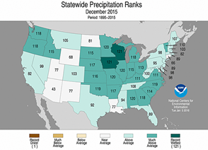
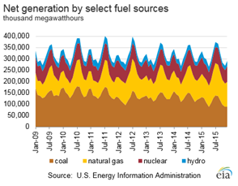
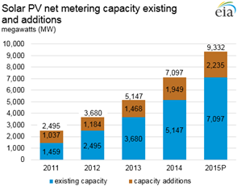
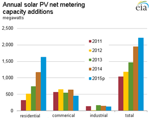

Electricity Monthly Update
With Data for December 2015 | Release Date: Feb. 26, 2015 | Next Release Date: Mar. 25, 2016
Previous Issues
Highlights: December 2015
- Retail electricity sales volumes and net generation were much lower in most states east of the Rockies than last December as record warmth enveloped the eastern U.S.
- Exceptionally mild weather led to wholesale natural gas and electricity prices that were just a fraction of those in past Decembers'.
- U.S. electric power sector coal stockpiles are nearing record levels due to coal's loss in market share to natural gas in all regions of the country.
Key Indicators
| December 2015 | % Change from December 2014 | |
|---|---|---|
| Total Net Generation (Thousand MWh) |
324,445 | -4.0% |
| Residential Retail Price (cents/kWh) |
12.36 | 1.6% |
| Retail Sales (Thousand MWh) |
293,890 | -5.1% |
| Heating Degree-Days | 576 | -18.5% |
| Natural Gas Price, Henry Hub ($/MMBtu) |
1.95 | -43.6% |
| Natural Gas Consumption (Mcf) |
807,773 | 19.9% |
| Coal Consumption (Thousand Tons) |
50,191 | -26.0% |
| Coal Stocks (Thousand Tons) |
197,128 | 30.1% |
| Nuclear Generation (Thousand MWh) |
69,634 | -5.1% |



U.S. solar PV net metering capacity continued strong growth in 2015
 Source: U.S. Energy Information Administration, February 2016 Electric Power Monthly DatabaseNotes: Data for 2015 are preliminary.
Strong growth in the U.S. solar photovoltaic (PV) net metering capacity continued in 2015. EIA preliminary 2015 data show that net metering capacity at non-utility-scale solar PV facilities (facilities smaller than 1 megawatt) increased from 7,097 megawatt (MW) in 2014 to 9,332 MW in 2015, a 31% increase. This increase continues the recent strong growth in net metering capacity, which has nearly quadrupled since 2011.
Net metering is an arrangement that allows an electric-utility customer to generate renewable electricity from an eligible generator to offset the cost of some or all of their electricity consumption. Electricity generated from the PV system is generally used on-site. When generation exceeds on-site load, the surplus electricity will flow into the connected utility distribution system. The excess is subject to state net metering rules and the customer may be credited for the excess electricity. When the customer consumes more electricity than is generated from the PV system to meet on-site load, the customer is billed for the net electricity consumed from the grid. Net metering capacity data shown here does not include utility scale facilities (greater than 1 MW) and behind-the-meter generation capacity that is not net metered.
Capacity additions have increased each year between 2011 and 2015, from 1,037 megawatts (MW) of solar PV net metering capacity in 2011 to 2,235 MW in 2015. This growth is being fostered in states that have a favorable regulatory environment for net metering, conducive climatic conditions for solar PV, and the presence of third-party operators (e.g., Solar City, etc.) that facilitate net metering arrangements between themselves, end-use customers, and utilities.
| State | 2015P (MW) | Rank |
|---|---|---|
| California | 3,945 | 1 |
| New Jersey | 952 | 2 |
| Arizona | 742 | 3 |
| Massachusetts | 723 | 4 |
| New York | 499 | 5 |
| Hawaii | 365 | 6 |
| Colorado | 284 | 7 |
| Maryland | 222 | 8 |
| Pennsylvania | 188 | 9 |
| Connecticut | 182 | 10 |
| U.S. total | 9,332 | -- |
| Source: U.S. Energy Information Administration, February 2016 Electric Power Monthly Database Notes: Data for 2015 are preliminary. |
||
| State | 2015P (MW) | Rank |
|---|---|---|
| California | 1,154 | 1 |
| New York | 186 | 2 |
| Massachusetts | 145 | 3 |
| Arizona | 140 | 4 |
| Nevada | 97 | 5 |
| New Jersey | 85 | 6 |
| Connecticut | 77 | 7 |
| Hawaii | 74 | 8 |
| Maryland | 69 | 9 |
| Utah | 27 | 10 |
| U.S. total | 2,235 | -- |
| Source: U.S. Energy Information Administration, February 2016 Electric Power Monthly Database Notes: Data for 2015 are preliminary. |
||
Most of the PV net metering capacity and PV capacity additions are concentrated in 10 states, with California having the largest share. The top ten states accounted for 87% (8,101 MW) of existing 2015 capacity and 92% (2,053 MW) of total 2015 capacity additions.
 Source: U.S. Energy Information Administration, February 2016 Electric Power Monthly DatabaseNotes: Data for 2015 are preliminary.
The rapid expansion in PV net metering capacity is being driven by developments in the residential sector. During 2015, about 2,235 megawatts (MW) of solar photovoltaic (PV) net metering capacity were installed. Almost three-quarters of all capacity additions (1,582 MW) were installed in the residential sector. The commercial sector accounted for about 515 MW, or 23%, of new 2015 PV net metering capacity. The remaining newly installed capacity, 138 MW (6% of total capacity), was installed in the industrial sector.
Looking over the entire 2011 to 2015 time horizon, of the total 7,873 MW of PV net metered capacity added during that time, nearly 55% (4,336 MW) was in the residential sector. Strong growth in the residential sector can, in part, be attributed to state programs that encourage PV net metering, improvements in PV technology, and the increased presence of third-party owners that facilitate both net metering for rooftop solar and virtual net metering agreements. These agreements allow consumers to get credit for net metering by buying into larger-scale solar PV projects not located on-site.
Principal Contributor:
Peter Wong
(Peter.Wong@eia.gov)
End Use: December 2015
Retail rates/prices and consumption
In this section, we look at what electricity costs and how much is purchased. Charges for retail electric service are based primarily on rates approved by state regulators. However, a number of states have allowed retail marketers to compete to serve customers and these competitive retail suppliers offer electricity at a market-based price.
EIA does not directly collect retail electricity rates or prices. However, using data collected on retail sales revenues and volumes, we calculate average retail revenues per kWh as a proxy for retail rates and prices. Retail sales volumes are presented as a proxy for end-use electricity consumption.
Average revenue per kWh by state
Average revenue per kilowatthour figures increased in 28 states and the District of Columbia in December compared to last year. Washington State recorded the largest increase, up 12%, with West Virginia the other state with a 10% or greater year-over-year increase. Twenty-one states decreased relative to last December (Michigan was flat), with Hawaii posting the largest year-over-year decline of any state for the twelfth month in a row, down 23% from last December. Hawaii's bulk power system is largely fueled by petroleum and the state has benefitted greatly from declines in world oil prices over the past year and a half.
Total average revenues per kilowatthour were 10 cents in December, down 1.2% from last year. Residential average revenue/sales was the only sector up in December, 1.6% to 12.35 cents per kilowatthour. The Commercial, Industrial, and Transportation sector averages were all down during the month. Retail sales volumes totaled 293,890 GWh, down 5.1% from last year due to exceptionally mild weather across the entire eastern half of the country during the month, with all sectors recording decreases.
Retail sales

State retail sales volumes largely reflected weather patterns in December. The eastern half of the country experienced very mild weather and lower retail sales volumes. As seen in the statewide temperature ranks map located in the Highlights section of the EMU, every state east of the Mississippi River (as well as Minnesota, Iowa, and Missouri) had its warmest December on record. It comes as no surprise then that the largest declines in retail sales volumes were found in the east as well. Kentucky had the largest decline, down 15%, followed by Delaware, down 13%, and West Virginia, down 12%. Tennessee, Virginia, Maryland, Indiana, South Carolina, and Missouri were also down more than 10% for the month. States in the western US, however, experienced cooler than normal weather and mostly had increased levels of retail sales volumes. All states from the Rocky Mountains to the Pacific Ocean, except for Montana and Wyoming, showed increases in retail sales volumes.
Florida was the one outlier during the month, with warmer temperatures increasing retail sales volumes. This is due to the fact that warmer-than-normal weather in Florida in December means something totally different than it does in most other states. Whereas warmer winter weather may lower retail sales volumes in most states due to lower heating needs, in Florida, warmer winter weather may increase retail sales volumes by increasing air conditioning needs. The number of high temperature records would be too numerous to list, but just to note a few: During December, Orlando had 23 days in the 80's; the average temperature in Melbourne, FL was not only the warmest of any December, but was warmer than any March on record; and Tampa matched or broke record high temperatures eight days in a row to close out the month.
Heating Degree Day (HDD) patterns were very straightforward in December. All states east of the Rocky Mountains had lower HDD levels than last year. All Rocky Mountain States and those to the west had higher HDD levels than last year. Florida had by far the largest decrease in HDDs of any state, down 79%, followed by South Carolina, down 48%, North Carolina, down 43%, and Georgia, down 41%. On the flip side, California had the largest increase in HDDs, up 33%, followed by Arizona, up 27%, Utah, up 22%, and Nevada, up 19%.
Resource Use: December 2015
Supply and fuel consumption
In this section, we look at the resources used to produce electricity. Generating units are chosen to run primarily on their operating costs, of which fuel costs account for the lion's share. Therefore, we present below, electricity generation output by fuel type and generator type. Since the generator/fuel mix of utilities varies significantly by region, we also present generation output by region.
Generation output by region

In December 2015, net generation in the United States decreased 4% compared to the previous December. This large decrease in generation occurred because the country experienced its warmest December on record, leading to a decreased demand for electricity generation used for residential heating. The decrease in electricity generation could have been more severe, but the country experienced its third warmest December last year, which diminished the year-over-year impact on the change in electricity generation..
At the region-level, almost all states in the eastern half of the country saw record warm temperatures in December, leading to a decrease in electricity generation in most of the eastern regions compared to the previous year. The only outlier in the eastern part of the country was Florida, where record warm temperatures led to more residential cooling and a resulting increase in electricity generation compared to December 2014. In the western region, electricity generation increased compared to last year, as the western half of the country experienced near average temperatures in December 2015, while experiencing above average temperatures the prior year.
Following the trend observed in recent months, electricity generation from coal decreased in all regions of the country compared to the previous year. Electricity generation from natural gas increased in all regions of the country, except for the Northeast, where natural gas generation remained relatively unchanged compared to December 2014.
Fossil fuel consumption by region
The chart above compares coal consumption in December 2014 and December 2015 by region and shows that, like electricity generation from coal, coal consumption decreased in all regions of the country..
The second tab compares natural gas consumption by region and shows that increases in natural gas consumption from the previous December mirrored the increases in electricity generation from natural gas over the same period, including the Northeast, where natural gas consumption remained relatively flat compared to the prior December.
The third tab presents the change in the relative share of fossil fuel consumption by fuel type on a percentage basis, calculated using equivalent energy content (Btu). This highlights changes in the relative market shares of coal, natural gas, and petroleum. In December 2015, the share of natural gas consumption increased in all regions of the country at the expense of coal consumption compared to the previous year.
The fourth tab presents the change in coal and natural gas consumption on an energy content basis by region. The changes in total coal and natural gas consumption were similar to the changes seen in total coal and natural gas net generation in each region.
Fossil fuel prices
To gain some insight into the changing pattern of consumption of fossil fuels over the past year, we look at relative monthly average fuel prices. A common way to compare fuel prices is on an equivalent $/MMBtu basis as shown in the chart above. The average price of natural gas at Henry Hub decreased considerably from the previous month, going from $2.15/MMBtu in November 2015 to $1.95/MMBtu in December 2015. The natural gas price for New York City (Transco Zone 6 NY) also saw a decrease from the previous month, going from $1.86/MMBtu in November 2015 to $1.69/MMBtu in December 2015.
The New York Harbor residual oil price decreased significantly from the previous month, going from $7.40/MMBtu in November 2015 to $5.91/MMBtu in December 2015. Regardless, oil used as a fuel for electricity generation is almost always priced out of the market.
A fuel price comparison based on equivalent energy content ($/MMBtu) does not reflect differences in energy conversion efficiency (heat rate) among different types of generators. Gas-fired combined-cycle units tend to be more efficient than coal-fired steam units. The second tab shows coal and natural gas prices on an equivalent energy content and efficiency basis. For the twelfth consecutive month, the price of natural gas at Henry Hub was below the price of Central Appalachian coal on a $/MWh basis. The spread between the two prices increased slightly, mainly due to the larger drop in the price of natural gas at Henry Hub. The spread between the New York City gas price and the price of Central Appalachian coal increased slightly as well, due mainly to the decrease in the natural gas price of New York City.
The conversion shown in this chart is done for illustrative purposes only. The competition between coal and natural gas to produce electricity is more complex. It involves delivered prices and emission costs, the terms of fuel supply contracts, and the workings of fuel markets.
Regional Wholesale Markets: December 2015
The United States has many regional wholesale electricity markets. Below we look at monthly and annual ranges of on-peak, daily wholesale prices at selected pricing locations and daily peak demand for selected electricity systems in the Nation. The range of daily prices and demand data is shown for the report month and for the year ending with the report month.
Prices and demand are shown for six Regional Transmission Operator (RTO) markets: ISO New England (ISO-NE), New York ISO (NYISO), PJM Interconnection (PJM), Midwest ISO (MISO), Electric Reliability Council of Texas (ERCOT), and two locations in the California ISO (CAISO). Also shown are wholesale prices at trading hubs in Louisiana (into Entergy), Southwest (Palo Verde) and Northwest (Mid-Columbia). In addition to the RTO systems, peak demand is also shown for the Southern Company, Progress Florida, Tucson Electric, and the Bonneville Power Authority (BPA). Refer to the map tabs for the locations of the electricity and natural gas pricing hubs and the electric systems for which peak demand ranges are shown.
In the second tab immediately below, we show monthly and annual ranges of on-peak, daily wholesale natural gas prices at selected pricing locations in the United States. The range of daily natural gas prices is shown for the same month and year as the electricity price range chart. Wholesale electricity prices are closely tied to wholesale natural gas prices in all but the center of the country. Therefore, one can often explain current wholesale electricity prices by looking at what is happening with natural gas prices.
Wholesale prices

This December stands in stark contrast to previous Decembers, as record warm temperatures in the east and very low natural gas prices kept wholesale electricity (and natural gas) prices at a fraction of what they have been in past years in the Northeast. Electricity prices were highest during the month in New England (ISONE), but still topped out at only $48/MWh while prices only reached $34/MWh in New York City (NYISO). Compare this to New England (ISONE) electricity prices that reached $206/MWh in December 2013 and $82/MWh in December 2014, New York City (NYISO) electricity prices that reached $165/MWh in December 2013 and $50/MWh in December 2014. In a bit of a reversal of normal pricing patterns, cold weather in the western US raised both wholesale natural gas and electricity prices to levels in some cases higher than those seen in the east and Northeast. Monthly high electricity prices were higher in December in Northern and Southern California (CAISO) than those found in New York City (NYISO), with Northwest (Mid-C) monthly high prices falling just a few cents short of New York City.
Wholesale natural gas prices were also a fraction of Decembers past, especially in the Northeast. Prices reached only $4.72/MMBtu in New England (Algonquin), down from $32.25/MMBtu in December 2013 and $12.53/MMBtu in December 2014. Prices reached only $2.18/MMBtu in New York City (Transco Z6 NY), down from $16.13/MMBtu in December 2013 and $4.51/MMBtu in December 2014. Prices in the Mid-Atlantic (Tetco M-3) peaked at only $1.47/MMBtu this December, well down from a high of $12/MMBtu in December 2013 and $3.57/MMBtu last December. Across the rest of the country, prices just reached $3/MMBtu in the Southwest (El Paso San Juan) and Southern California (SoCal Border).
Electricity system daily peak demand

{kind=link}
{kind=link}
{kind=link}
{kind=link}
{kind=link}
{kind=link}
{kind=link}
Similar to November, electricity system daily peak demand remained towards the low end of the annual range for every region besides the Northwest (Bonneville Power Administration, or BPA). This is no surprise given weather patterns, which were extremely warm for December in most of the regions listed. Only Tucson Electric, California (CAISO), and BPA were located in regions with seasonably cold weather, and cold-than-normal temperatures in California and Arizona will have a much smaller effect on energy demand compared to cold weather hitting the Northeast or Midwest. All regions except BPA remained below 70% of their respective all-time peak demand levels (typically set in June-August). Last year, with colder weather, New England (ISONE), Midwest (MISO), Southern Company, and Texas (ERCOT) all had peak demand well above that 70% of all-time threshold. BPA reached 78% of its all-time peak on December 31, as cold weather, though nothing near record breaking, fell across its service region.
Electric Power Sector Coal Stocks: December 2015
In December, U.S. coal stockpiles increased to 197 million tons, up 4% from the previous month. This increase in November-to-December coal stockpiles can be attributed to the significant decrease in coal consumption that occurred in December due to the record warm temperatures and reduced reliance on coal as a fuel used for electricity generation. Overall U.S. coal stockpile are now nearing record levels due to the loss in market share to natural gas in all regions of the country.
Days of burn
The average number of days of burn held at electric power plants is a forward-looking estimate of coal supply given a power plant's current stockpile and past consumption patterns. For bituminous units largely located in the eastern United States, the average number of days of burn increased from 88 days of burn in November to 91 days of forward-looking days of burn in December. For subbituminous units largely located in the western United States, the average number of days of burn increased, going from 85 days in November to 95 days in December.
Coal stocks and average number of days of burn for non-lignite coal by region (electric power sector)
| December 2015 | December 2014 | November 2015 | ||||||||
|---|---|---|---|---|---|---|---|---|---|---|
| Zone | Coal | Stocks (1000 tons) | Days of Burn | Stocks (1000 tons) | Days of Burn | % Change of Stocks | Stocks (1000 tons) | Days of Burn | % Change of Stocks | |
| Northeast | Bituminous | 8,431 | 92 | 7,513 | 86 | 12.2% | 8,032 | 89 | 5.0% | |
| Subbituminous | 675 | 174 | 475 | 82 | 42.1% | 708 | 147 | -4.6% | ||
| South | Bituminous | 38,762 | 95 | 35,200 | 85 | 10.1% | 37,406 | 92 | 3.6% | |
| Subbituminous | 8,145 | 97 | 6,383 | 79 | 27.6% | 7,584 | 84 | 7.4% | ||
| Midwest | Bituminous | 18,625 | 88 | 14,430 | 68 | 29.1% | 17,608 | 83 | 5.8% | |
| Subbituminous | 48,526 | 82 | 31,939 | 51 | 51.9% | 45,384 | 74 | 6.9% | ||
| West | Bituminous | 5,331 | 77 | 4,603 | 64 | 15.8% | 5,789 | 78 | -7.9% | |
| Subbituminous | 40,914 | 116 | 25,773 | 68 | 58.7% | 39,044 | 104 | 4.8% | ||
| U.S. Total | Bituminous | 71,149 | 91 | 61,745 | 79 | 15.2% | 68,836 | 88 | 3.4% | |
| Subbituminous | 98,260 | 95 | 64,570 | 58 | 52.2% | 92,720 | 85 | 6.0% | ||
Source: U.S. Energy Information Administration
NOTE: Stockpile levels shown above reflect a sample of electric power sector plants, which were used to create the days of burn statistics. These levels will not equal total electric power sector stockpile levels.
Methodology and Documentation
General
The Electricity Monthly Update is prepared by the Electric Power Operations Team, Office of Electricity, Renewables and Uranium Statistics, U.S. Energy Information Administration (EIA), U.S. Department of Energy. Data published in the Electricity Monthly Update are compiled from the following sources: U.S. Energy Information Administration, Form EIA-826,“Monthly Electric Utility Sales and Revenues with State Distributions Report,†U.S. Energy Information Administration, Form EIA-923, "Power Plant Operations Report," fuel spot prices from Bloomberg Energy, electric power prices from SNL Energy, electric system demand data from Ventyx Energy Velocity Suite, and weather data and imagery from the National Oceanic and Atmospheric Administration.
The survey data are collected monthly using multiple-attribute cutoff sampling of power plants and electric retailers for the purpose of estimation for various data elements (generation, stocks, revenue, etc.) for various categories, such as geographic regions. (The data elements and categories are “attributes.”) The nominal sample sizes are: for the Form EIA-826, approximately 450 electric utilities and other energy service providers; for the Form EIA-923, approximately 1900 plants. Regression-based (i.e., “prediction”) methodologies are used to estimate totals from the sample. Essentially complete samples are collected for the Electric Power Monthly (EPM), which includes State-level values. The Electricity Monthly Update is based on an incomplete sample and includes only regional estimates and ranges for state values where applicable. Using ‘prediction,’ it is generally possible to make estimates based on the incomplete EPM sample, and still estimate variances.
For complete documentation on EIA monthly electric data collection and estimation, see the Technical Notes to the Electric Power Monthly. Values displayed in the Electric Monthly Update may differ from values published in the Electric Power Monthly due to the additional data collection and data revisions that may occur between the releases of these two publications.
Accessing the data: The data included in most graphics can be downloaded via the "Download the data" icon above the navigation pane.Some missing data are proprietary and non-public.
Key Indicators
The Key Indicators in the table located in the "Highlights" section, are defined below. The current month column includes data for the current month at a national level. The units vary by statistic, but are included in the table. The "% Change from 2010" value is the current month divided by the corresponding month last year (e.g. July 2011 divided by July 2010). This is true for Total Generation, Residential Retail Price, Retail Sales, Degree-Days, Coal Stocks, Coal and Natural Gas Consumption. The Henry Hub current month value is the average weekday price for the current month. The Henry Hub "% Change from 2010" value is the average weekday price of the same month from 2010 divided by the average weekday price of the current month.
Total Net Generation: Reflects the total electric net generation for all reporting sectors as collected via the Form EIA-923.
Residential Retail Price: Reflects the average retail price as collected via the Form EIA-826.
Retail Sales: Reflects the reported volume of electricity delivered as collected via the Form EIA-826.
Degree-Days: Reflects the total population-weighted United States degree-days as reported by the National Oceanic and Atmospheric Administration.
Natural Gas Henry Hub: Reflects the average price of natural gas at Henry Hub for the month. The data are provided by Bloomberg.
Coal Stocks: Reflects the total coal stocks for the Electric Power Sector as collected via the Form EIA-923.
Coal Consumption: Reflects the total coal consumption as collected via the Form EIA-923.
Natural Gas Consumption: Reflects the total natural gas consumption as collected via the Form EIA-923.
Nuclear Outages: Reflects the average daily outage amount for the month as reported by the Nuclear Regulatory Commission's Power Reactor Status Report and the latest net summer capacity data collected on the EIA-860 Annual Generator Report.
Sector Definitions
The Electric Power Sector comprises electricity-only and combined heat and power (CHP) plants within the North American Industrial Classification System 22 category whose primary business is to sell electricity, or electricity and heat, to the public (i.e., electric utility plants and Independent Power Producers (IPPs), including IPP plants that operate as CHPs). The All Sectors totals include the Electric Power Sector and the Commercial and Industrial Sectors (Commercial and Industrial power producers are primarily CHP plants).
Degree Days
Degree-days are relative measurements of outdoor air temperature used as an index for heating and cooling energy requirements. Heating degree-days are the number of degrees that the daily average temperature falls below 65° F. Cooling degree-days are the number of degrees that the daily average temperature rises above 65° F. The daily average temperature is the mean of the maximum and minimum temperatures in a 24-hour period. For example, a weather station recording an average daily temperature of 40° F would report 25 heating degree-days for that day (and 0 cooling degree-days). If a weather station recorded an average daily temperature of 78° F, cooling degree-days for that station would be 13 (and 0 heating degree days).
Per Capita Retail Sales
The per capita retail sales statistics use 2011 population estimates from the U.S. Census Bureau and monthly data collected by the Energy Information Administration. The volume of electricity delivered to end users for all sectors in kilowatthours is divided by the 2011 population estimate for each state.
Composition of Fuel Categories
Net generation statistics are grouped according to regions (see Electricity Monthly Update Explained Section) by generator type and fuel type. Generator type categories include:
Fossil Steam: Steam turbines powered by the combustion of fossil fuels
Combined Cycle: Combined cycle generation powered by natural gas, petroluem, landfill gas, or other miscellaneous energy sources
Other Fossil: Simple cycle gas turbines, internal combusion turbines, and other fossil-powered technology
Nuclear Steam: Steam turbines at operating nuclear power plants
Hydroelectric: Conventional hydroelectric turbines
Wind: Wind turbines
Other renewables: All other generation from renewable sources such as geothermal, solar, or biomass
Other: Any other generation technology, including hydroelectric pumped storage
Generation statistics are also displayed by fuel type. These include:
Coal: all generation associated with the consumption of coal
Natural Gas: all generation associated with the consumption of natural gas
Nuclear: all generation associated with nuclear power plants
Hydroelectric: all generation associated with conventional hydroelectric turbines
Other Renewable: all generation associated with wind, solar, biomass, and geothermal energy sources
Other Fossil: all generation associated with petroleum products and fossil-dervied fuels
Other: all other energy sources including waste heat, hydroelectric pumped storage, other reported sources
Relative Fossil Fuel Prices
Relative fossil fuel prices are daily averages of fossil fuel prices by month, displayed in dollars per million British thermal units as well as adjusted for operating efficiency at electric power plants to convert to dollars per megawatthour. Average national heat rates for typical operating units for 2010 were used to convert relative fossil fuel prices.
Average Days of Burn
Average Days of Burn is defined as the average number of days remaining until coal stocks reach zero if no further deliveries of coal are made. These data have been calculated using only the population of coal plants present in the monthly Form EIA-923. This includes 1) coal plants that have generators with a primary fuel of bituminous coal (including anthracite) or subbituminous, and 2) are in the Electric Power Sector (as defined in the above "Sector definitions"). Excluded are plants with a primary fuel of lignite or waste coal, mine mouth plants, and out-of-service plants. Coal storage terminals and the related plants that they serve are aggregated into one entity for the calculation of Average Days of Burn, as are plants that share stockpiles.
Average Days of Burn is computed as follows: End of month stocks for the current (data) month, divided by the average burn per day. Average Burn per Day is the average of the three previous years’ consumption as reported on the Form EIA-923.
These data are displayed by coal rank and by zone. Each zone has been formed by combining the following Census Divisions:
- Northeast — New England, Middle Atlantic
- South — South Atlantic, East South Central
- Midwest — West North Central, East North Central
- West — Mountain, West South Central, Pacific Contiguous
Coal Stocks vs. Days of Burn Stocks
The coal stocks data presented at the top of the Fossil Fuel Stocks section (“Coal Stocks”) will differ from the coal stocks presented in the Days of Burn section (“DOB Stocks”) at the bottom of the Fossil Fuel Stocks section. This occurs because Coal Stocks include the entire population of coal plants that report on both the annual and monthly Form EIA-923. The DOB Stocks only include coal plants that report on the monthly Form EIA-923 and have a primary fuel of bituminous (including anthracite) or subbituminous as reported on the Form EIA-860.